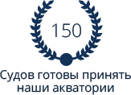
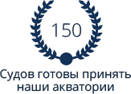

ПАО «Чкаловская судоверфь» — это современное судостроительно-судоремонтное предприятие. У нас имеются собственные производства: деревообрабатывающее, литейное, кузнечное, механообрабатывающее, корпусно-сварочное. Сборочный и электромонтажный участки. В качестве судоподъёмного устройства мы используем поперечный слип, позволяющий осуществлять подъём судов до 135 метров длиной, до 26 метров шириной и доковой массой до 2500 тонн.
Подробнее